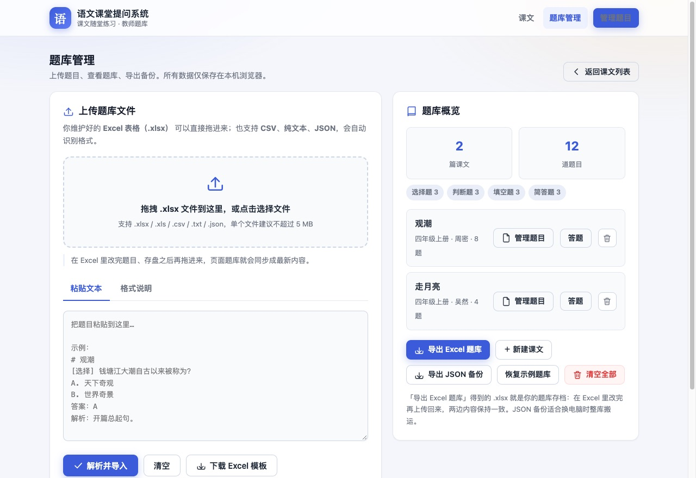
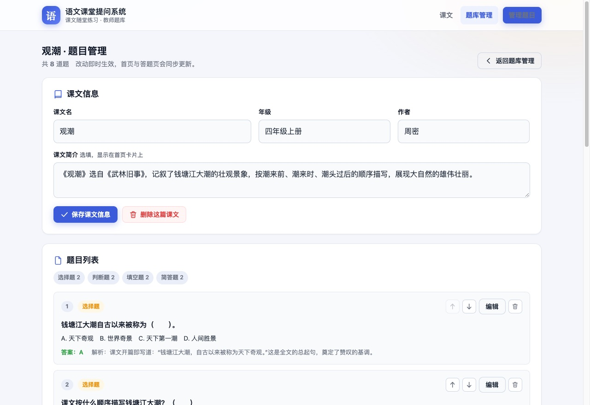
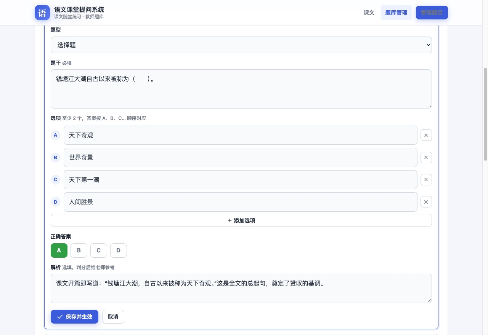
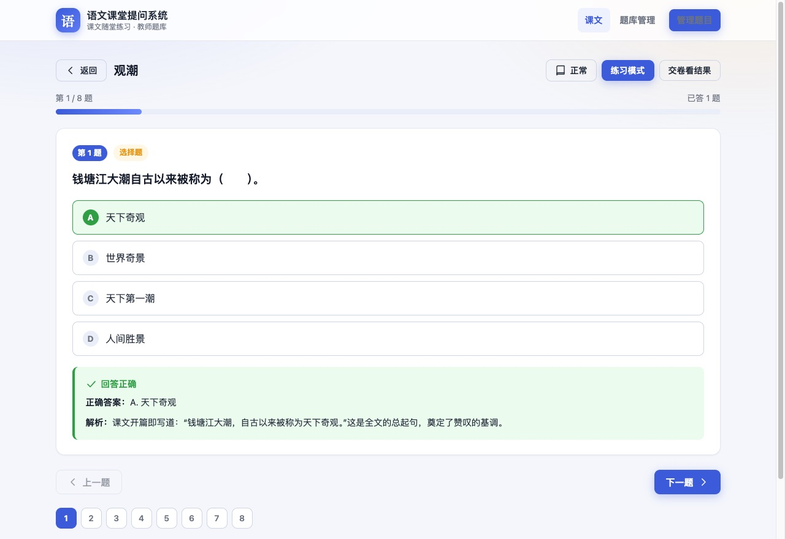
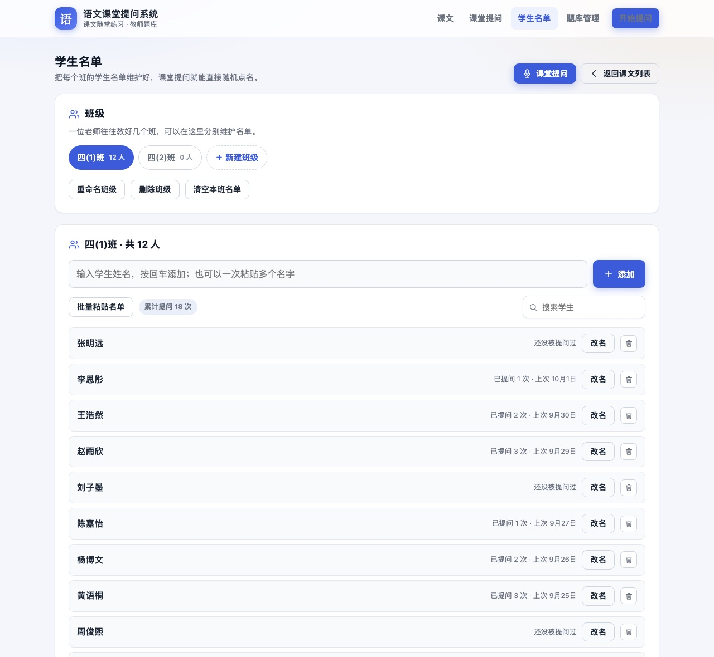

1快速开始
三步上手：解压 → 双击 → 开始上课。
- 解压缩 把收到的压缩包解压到任意位置（如桌面）。解压后得到一个文件夹，里面的文件和文件夹请保持在同一层，不要单独挪动。
- 双击
index.html用浏览器打开它，网站立刻可以使用——已内置《观潮》《走月亮》两篇示例课文共 12 道题，可直接体验。 - 换成自己的题库 打开页面右上角「题库管理」，上传你按第 3 节格式准备好的 Excel 表格即可。
三种打开方式（按方便程度排序）
方式一：双击打开（最常用）
直接双击 index.html。日常备课、上课足够了。
方式二：拖进浏览器
把 index.html 拖到已打开的浏览器窗口里，效果一样。
方式三：本地小服务（进阶）
想在教室多台电脑共用同一份题库、或需要部署到校园网时使用，见随包 README.md 的部署章节。
手机上用：装到桌面，像 App 一样
网站放到网上（有网址）之后，可以把它「装」到手机桌面：点开就是全屏，不用每次输网址，断网也能打开。
| 手机 | 怎么装 |
|---|---|
| iPhone / iPad | 用 Safari 打开网址 → 点底部中间的「分享」按钮 → 「添加到主屏幕」→ 添加 |
| 安卓手机 | 用 Chrome / Edge 打开 → 点右上角「⋮」→「安装应用」或「添加到主屏幕」 |
| 微信里打开的 | 点右上角「···」→「在浏览器中打开」，再按上面操作 |
2认识界面
整个网站只有两个主页面：课文页（上课用）和题库管理页（备课时用）。
课文页：每篇课文一张卡片，显示题量与题型分布，点「开始答题」进入课堂提问。
3建立自己的题库
进入「题库管理」页，有三种录题方式，可以混用。

题库管理页：上方是导入区（拖拽 / 粘贴 / 模板），下方是已导入的课文列表。
3.1 用 Excel 管理题目（推荐）
这是最主要的方式：在 Excel 里维护题目 → 存盘 → 拖进网页，页面立即生效。
- 下载模板在「题库管理 → 上传题目」里点「下载 Excel 模板」，得到一个含「填写说明」工作表的 xlsx。
- 按格式填题一行一道题，照下表的列填写（也可以先看包内
sample/示例题库-四年级上册.xlsx照葫芦画瓢）。 - 上传生效把填好的 xlsx 拖进网页的虚线框里。同名课文会提示「覆盖」还是「追加」；上传即生效，不用刷新。
| 列 | 怎么填 |
|---|---|
| 课文 | 课文名称，同名课文会归到同一篇。这是分组的唯一依据。 |
| 年级 / 作者 | 选填，显示在卡片上（如「四年级上册 · 周密」）。 |
| 题型 | 选择题 / 判断题 / 填空题 / 简答题。留空会按内容自动判断。 |
| 题干 | 题目本身。填空题的空位建议写成 （ ）。 |
| 选项A~F | 只有选择题需要。有几个选项填几个，不必填满。 |
| 答案 | 见下方「答案格式速查」。 |
| 解析 | 选填。答题后会显示，建议写清出处或理由。 |
答案格式速查
| 题型 | 答案写法 | 示例 |
|---|---|---|
| 选择题 | 选项字母，如 A、C | A |
| 判断题 | 「正确」或「错误」（对/错/√/× 也认） | 正确 |
| 填空题 | 多个可接受答案用 | 分隔；判分时忽略空格与标点差异 | 一会儿|一瞬间 |
| 简答题 | 填参考答案。课堂上看答案后老师自评对错 | 把潮水比作白线和水墙 |
3.2 粘贴文本快速录题
临时加几道题时最快：在「粘贴文本」标签里按下面的样子贴进去，点「解析并导入」。
# 小壁虎借尾巴 @年级 一下 [选择] 小壁虎的尾巴断了以后怎么了？ A. 自己长出了新尾巴 B. 借了一条 C. 没有长出来 答案：A 解析：小壁虎自己长出了新尾巴。 [判断] 小壁虎向小鱼借到了尾巴。 答案：错误
第一行 # 课文名，@年级 可省略，[题型] 可省略（自动判断）。
3.3 在网页里手动录入
- 在课文列表点某篇课文旁的「管理题目」（或先「新建课文」）。
- 点「新增题目」，选题型 → 填题干 → 填选项/答案 → 保存。保存的瞬间，首页和答题页同步生效。
- 每道题都可随时「编辑 / 上移 / 下移 / 删除」，改动同样即时生效。

题目管理列表：每道题都能看到摘要与操作按钮。

题目编辑表单：切换题型时，选项、答案输入框会自动变化。
4学生答题怎么用
课文页点「开始答题」进入答题页，让学生逐题作答，建议连投影使用。
（要看老师点名提问，见下一节 5。）

答题页：答完立即显示对错、正确答案和解析；底部题号可任意跳题。
练习 / 测试两种模式
练习：每答一题立刻判分（适合边讲边练）；测试：全部答完交卷才判分（适合小测）。
投影大字
答题页右上角「正常 / 大 / 特大」三档字号，教室后排也看得清。选择会被记住。
键盘操作
A~F 选选项，1/2 判断对错，Enter 提交填空，←/→ 翻题。
四种题型的答题方式
| 题型 | 课堂上怎么操作 |
|---|---|
| 选择题 | 点选项即判分；先让学生举手/抢答，再点选验证。 |
| 判断题 | 点「正确」或「错误」。 |
| 填空题 | 输入答案回车。多个可接受答案（如 一会儿|一瞬间）任答一个都对。 |
| 简答题 | 展示学生答案后，点「查看参考答案」核对，再点「我答对了 / 需复习」自评。 |
5点名提问：学生名单 + 随机分题
这一节是给老师点名用的：先建好学生名单，上课时随机抽人或者手动指定几名同学， 系统会给每位学生随机分到不同的题目，一个学生一个学生地问。
5.1 建立学生名单（第一次用先做这一步）

学生名单页：可以建多个班级，名单支持从 Excel 批量粘贴。
- 打开「学生名单」顶部导航点「学生名单」（手机上可点首页的「课堂提问」进入后再点「管理学生名单」）。
- 粘贴名单点「批量粘贴名单」，在 Excel 里整列复制学生姓名粘进去，点「导入名单」即可。 一行一个名字，也支持逗号、顿号、空格分隔；重名会自动跳过。
- 多个班点「＋ 新建班级」分别维护每个班的名单，上课前在提问页选一下班级就行。
名单页右边还有「导出名单」：点一下就把本班名单存成 CSV 文件，方便留档和换电脑时重新粘贴。
5.2 安排一次提问
提问设置页：左边选学生，右边选课文、题型和题目数量。
- 选学生（两种方式）「随机抽取」：填好人数点「随机抽取」，勾选「优先抽提问次数少的同学」可以让全班轮得更公平； 「手动指定」：直接点名字选中，可以多选。抽完之后还能手动加减。
- 选课文与题型课文可以多选；题型可以混搭，比如只抽「选择题 + 填空题」。
- 定题量设置「每位学生抽几道题」。默认勾选「不同学生之间不重复出题」，系统会保证同学之间不重题； 题目数量不够时会提前弹窗提醒。
- 开始提问点「开始提问」，进入提问界面。
5.3 课堂上怎么用
提问进行页：一次显示一位学生的一道题，适合投影给全班看。
| 想做什么 | 怎么做 |
|---|---|
| 核对答案 | 点右上角「显示答案」展开正确答案和解析（给老师看，可以随时收起）。 |
| 记录结果 | 学生答完点「答对 / 答错 / 跳过」，会自动跳到下一题；点错了再点一次即可取消重记。 |
| 换一道题 | 觉得这道题不合适，点「换一题」立刻换成另一道没问过的题。 |
| 换学生 | 点「下一位学生」，或者点页面下方的学生姓名直接跳过去。 |
| 临时加人 | 课堂上来了别的同学，点「＋ 临时加人」输入姓名即可。名单里已有的同学会沿用本人（提问次数照常累计）；名单外的同学只加入这次提问，不会写进名单。 |
| 投影放大 | 右上角「正常 / 大字 / 投影」三档字号，和答题页一致。 |
5.4 提问小结
提问小结：正确率、逐人明细，可以直接打印留档。
- 逐人明细：每位学生分到哪些题、答对几道，一目了然。
- 临时加入的同学会标上「临时」，一眼能区分出名单内外的学生。
- 再抽一轮：同一批学生、同样的范围，重新随机分一套题接着练。
- 忘记记录也不怕：还有没记录的题时，小结页会提示「继续记录」，可以回去补记。
- 打印小结：点「打印小结」直接打印，方便贴到班级记录本。
6成绩与错题
点「交卷看结果」进入结果页。
结果页：正确率圆环、逐题回顾、错题清单，可直接打印留档。
- 只练错题：一键把本次答错的题组成新一轮练习，讲评课直接用。
- 历史成绩：每篇课文记住最近一次成绩，显示在课文卡片上。
- 打印：结果页可直接打印（Ctrl/⌘ + P），方便贴到成长档案或发给家长。
7备份与换电脑（重要）
题目数据保存在当前这台电脑的当前浏览器里——换电脑、换浏览器、清除浏览器数据，都会回到空白。所以请养成备份习惯。
| 你想做什么 | 操作 |
|---|---|
| 备份数据 | 题库管理 → 「导出 Excel 题库」，得到一个可在 Excel 里直接编辑的 xlsx 存档。 |
| 备份学生名单 | 学生名单 → 「导出名单」，得到一个 CSV（一个名字一行）。换电脑时用「批量粘贴名单」贴回来即可。 |
| 恢复 / 换电脑 | 新电脑上打开网站 → 把备份的 xlsx 拖进上传区即可，题目原样恢复（含多答案、解析）。 |
| 和同事共享题库 | 把导出的 xlsx 发给同事，同事拖进自己的网站即可。 |
| 全年级共用一份、实时同步 | 需要部署到服务器（免费方案见 README「部署上线」章节），或联系懂技术的同事帮忙。 |
8常见问题
1. 双击打开后一片空白 / 样式错乱？
多半是解压后挪动了单独的文件。index.html 必须和 assets 文件夹待在一起。重新解压一份即可。
2. 顶部出现「当前浏览器禁止本地保存」的黄色提示条？
你的浏览器（通常是 Safari 双击打开）不允许网页保存数据：网站能正常用，但刷新后题目和进度会丢。两个办法任选：
- 装一个 Chrome 或 Edge，用它打开（推荐）；
- 或者继续用当前浏览器，但每次录完题立即「导出 Excel」备份，下次打开再导入。
3. 上传 Excel 后提示「没有解析到题目」？
按顺序检查：① 是否从「表头」那一行开始填（第一行是列名）；② 「题干」列不能为空；③ 选择题至少要 2 个选项并填了答案字母；④ 文件是 .xlsx / .csv 格式而不是 .et / .numbers（WPS 和 Numbers 请先「另存为 xlsx」）。
4. 改了 Excel 再传，为什么有的课文没变化？
上传时如果弹出「覆盖 / 追加」的询问：选覆盖才会用新表替换旧题；选了「追加」则是把新题接在旧题后面。另外请确认改的是同一个课文名——名字不同会当成新课文。
5. 换了个浏览器打开，题库怎么空了？
数据按浏览器分开保存（见第 7 节）。把之前导出的备份 xlsx 拖进去就恢复了。
6. 想恢复到最初的示例题库？
题库管理 → 底部「恢复示例题库」。它只会补齐示例课文，不会动你自己录入的题目。
7. 想让全班学生用自己的设备答题、自动汇总成绩？
当前版本定位是「老师大屏提问」，学生数据只在老师电脑上。需要学生各自作答并云端汇总的话，需要加一个后端服务——可以在部署时一并规划（见 README）。
8. 上课途中断网了怎么办？
完全不受影响——本系统双击打开就能用，全程不依赖网络。
9. 点名提问怎么用？抽到的学生能保证不重题吗？
见第 5 节。只要题库里的题目够（页面上会显示「题目充足，同学之间不会重题」），系统就会保证同一次提问里每位学生拿到的题都不重复； 题目不够时会提前弹窗提醒，可以选择允许重复、或者返回把课文范围放大一点。
10. 学生名单能像题库一样导出备份吗？
能。学生名单页点「导出名单」即可下载本班名单（一个名字一行，Excel 能直接打开）。 换电脑时打开「学生名单 → 批量粘贴名单」把名字贴回来就行；「导出 Excel 题库」只含题目，不含名单。
11. 手机上怎么用得最方便？
把网址「添加到主屏幕」：iPhone 用 Safari 的分享菜单，安卓用 Chrome 的「安装应用」。 之后从桌面图标点开就是全屏，不用输网址，断网也能用（题目本来就在本机）。详见第 1 节。
更多部署（校园网 / 云服务器）与技术细节，见同目录下的 README.md。